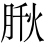
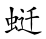

矛尘兄：
日前寄一函，意专在阻止将敝稿送于姨副[155]，故颇匆匆。这几天我是专办了收束伏翁所办的书店[156]一案，昨天弄完了，除自己出汗生痱子外，还请帮忙人吃了一回饭，计花去小洋六元，别人做生意而我折本，岂不怪哉！
遥想一月以前，一个獐头鼠目而赤鼻之“学者”，奔波于“西子湖”边而发挥咱们之“不好”，一面又想出起诉之“无聊之极思”来，湖光山色，辜负已尽，念及辄为失笑。禹是虫[157]，故无其人；据我最近之研究：迅盖禽也，亦无其人，鼻当可聊以自慰欤。案迅即卂，卂实即隼之简笔，与禹与禺，也与它无异，如此解释，则“準”字迎刃而解，即从水，隼声，不必附会从“淮”之类矣。我于文字亦颇有发明，惜无人与我通信，否则亦可集以成“今史辨”也。
近偶见该《古史辨》，惊悉上面乃有自序一百多版。查汉朝钦犯司马[158]，因割掉卵

而发牢骚，附于偌大之《史记》之后，文尚甚短，今该学者不过鼻子红而已矣，而乃已浩浩洋洋至此，殆真所谓文豪也哉。禹而尚在，也只能忍气吞声，自认为并无其人而已。此地下半年之中大文科，实即去年之厦大而撵走了鼻所不喜之徒，而傅乃大贴广告，谓足为全国模范。不过这是半月以前的事，后来如何，须听下回分解矣。我诸事大略已了，本即可走，而太古公司洋鬼子，偏偏罢工，令我无船可坐；此地又渐热，在西屋中九蒸九晒，炼得遍身痱子。继而思之，到上海恐亦须挤在小屋中，不会更好，所以也就心平气和，“听其自然”，生痱子就生痱子，长疙瘩就长疙瘩，无可无不可也。总之：一有较便之船，我即要走；但要我苦心孤诣，先搬往番鬼所管之香港以上邮船，则委实懒于奋发耳。好在近来鼻之起诉计划，当亦有所更改或修正，我亦无须急急如律令[159]矣。
《语丝》中所讲的话，有好些是别的刊物所不肯说，不敢说，不能说的。倘其停刊，亦殊可惜，我已寄稿数次，但文无生气耳。见新月社[160]书目，春台及学昭姑娘俱列名，我以为太不值得。其书目内容及形式，一副徐志摩式也。吧儿辈方携眷南下，而情状又变，近当又皇皇然若丧家[161]，可怜也夫。
迅 八，十七。
斐君兄及小燕弟均此致候。
注 释
[155] 姨副 戏指杭州《三五日报》副刊。《诗经·召南·小星》：“嘒彼小星，三五在东。”旧注认为“小星”指“妾”（姨太太）。
[156] 伏翁所办的书店 指孙伏园倡议开办的北新书屋。
[157] 禹是虫 顾颉刚在《努力》增刊《读书杂志》第九期（1923年5月）发表《与钱玄同先生论古史书》一文（后收入《古史辨》第一册），认为夏禹是“蜥蜴之类”的虫。
[158] 司马

指司马迁（约前145—约前86），字子长，夏阳（今陕西韩城南）人，汉代史学家和文学家。曾任太史令。所著《史记》为我国著名的纪传体史书。他曾因为李陵辩护而获罪下狱，受宫刑。鲁迅在迁旁加虫字，是对顾颉刚认为禹是“蜥蜴之类”的讽刺。[159] 如律令 原为汉代公文常用语，意思是如法律命令，必须迅速进行。道士仿效，用于符咒的末尾。
[160] 新月社 文学和政治性团体。约成立于1923年，主要成员有胡适、徐志摩、梁实秋、罗隆基等，取名于泰戈尔的诗集《新月集》。1927年该社成员多数南下，在上海创办新月书店，1928年3月发刊综合性的《新月》月刊。
[161] 皇皇然若丧家 《孔子家语》：“纍纍若丧家之狗。”